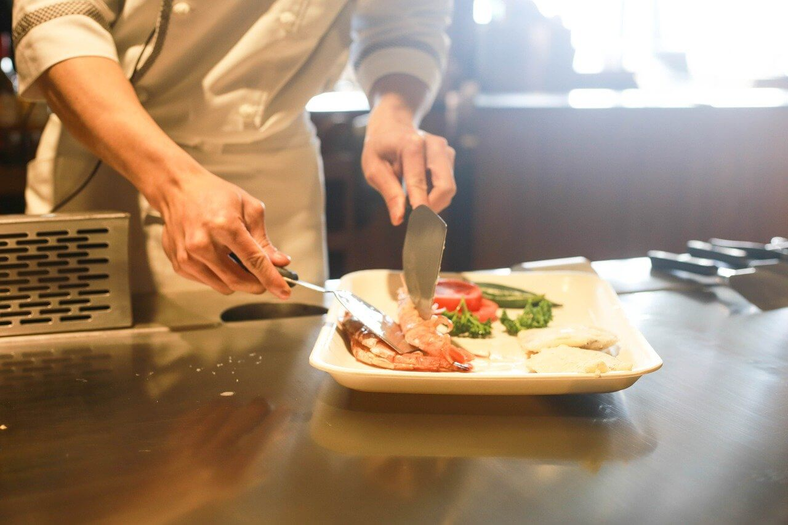
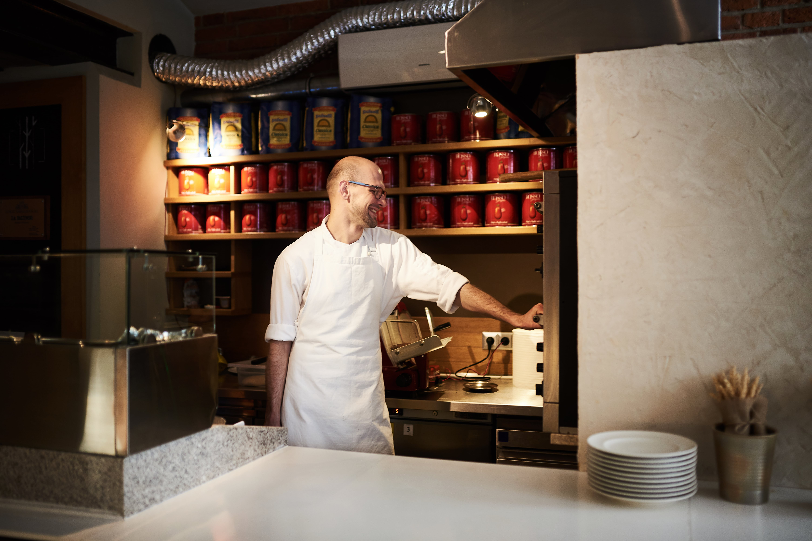
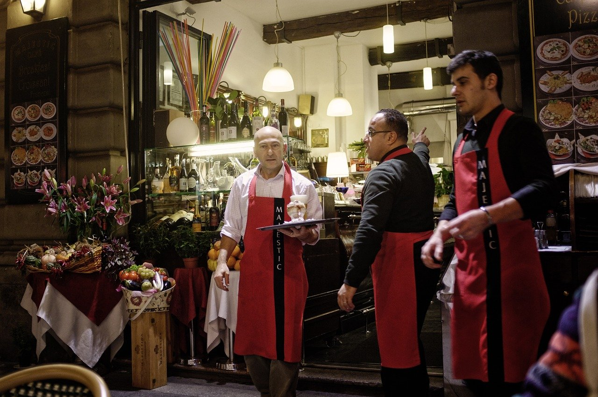

Najpierw był pomysł
Worek Pszenicy powstał z pasji. Z pasji do pysznego jedzenia, podróży i małych przyjemności. Od samego początku towarzyszyła nam pszenica. To dla nas pochwała prostoty, natury i życia w zgodzie z nią.


Włoska kuchnia z lokalnymi akcentami
W naszym menu znajdziesz wyjątkowe połączenie oryginalnych, włoskich receptur i lokalnych składników. Usiądź wygodnie i rozsmakuj się w naszych ręcznie robionych makaronach.
Wkładamy całe serce
Robimy wszystko, żebyś w Worku Pszenicy poczuł się niczym we włoskiej trattorii. Klimatyczny wystrój, urokliwy ogródek, muzyka na żywo i pyszne jedzenie - to wyróżnia Worek Pszenicy.
